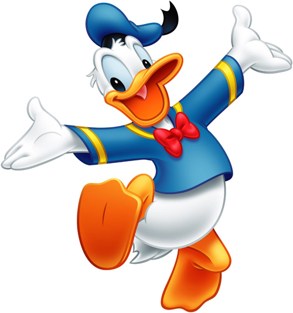

Characters |
|
Mickey Mouse! This character is know by many and loved by all! Mickey is the fun, adventurous, problem solving mouse that was the thing that started Disney! He has and forever will be the face of Disney and will always be the bases of all Disney life! |
|
Goofy! This character is the clown of the bunch! Goofy is well of course goofy, funny, clumsy and anything else along those lines of words! Although he may be a little clumsy, he is still one of the most loved characters all over the world! And he will always be one of the soul characters that make Disney what it is today! |
|
Donald Duck!This character is the hot headed duck who has a soft spot for his friends! Donald Duck is loving, hot headed, and adventurous! This duck is loving until you get on his bad side and then he blows his top! But although he clearly has some anger issues, Kids and adults like love donalds all over the world because of his love for his friends and his determination to do what is right! | |
And Many Many More! There are hundreds of Disney characters who are loved and thought of all around the world! Do you have a favorite Disney character? If not, go home, pop a bag of popcorn, and take a day to enjoy the little things in life like those childhood memories of Disney! | |